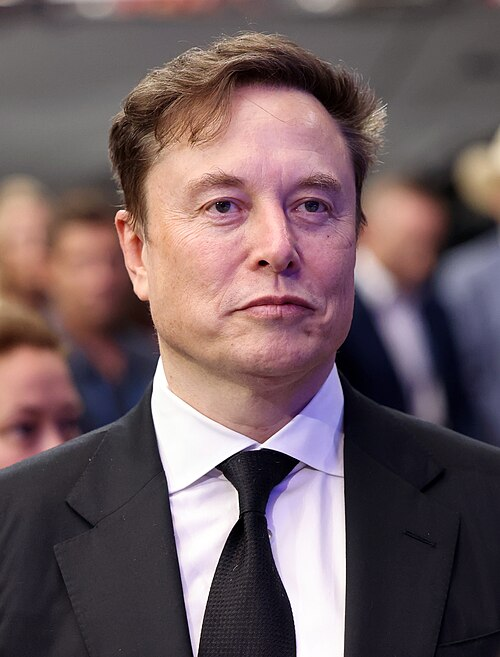

Elon Musk was born in 1971 in Pretoria, South Africa, and is alive today. He is a technology entrepreneur who has worked in online payments, electric cars, and space travel. He founded SpaceX and helped lead Tesla. His work includes reusable rockets and electric vehicles.
Technology entrepreneur and innovator
Timeline of Elon Musk's Life
- 1971 — Born in Pretoria, South Africa.
- 1999 — Co-founded X.com, an online financial services company that later became PayPal.
- 2002 — Founded SpaceX with the goal of reducing space transportation costs to enable the colonization of Mars.
- 2004 — Joined Tesla Motors as chairman and product architect, later becoming CEO to drive the electric vehicle revolution.
- 2020 — SpaceX launched its first crewed mission to the International Space Station, marking a new era of commercial spaceflight.
Key Inventions and Contributions
- Falcon 9 & Falcon Heavy: First reusable orbital-class rocket boosters, revolutionizing commercial space transportation.
- Tesla Model S & Model 3: Mass-market long-range electric vehicles that popularized sustainable driving worldwide.
- Starlink: Satellite internet constellation designed to provide high-speed global coverage to remote areas.
- Neuralink Brain Interface: High-bandwidth brain-computer interface technology aimed at restoring mobility and treating neurological conditions.